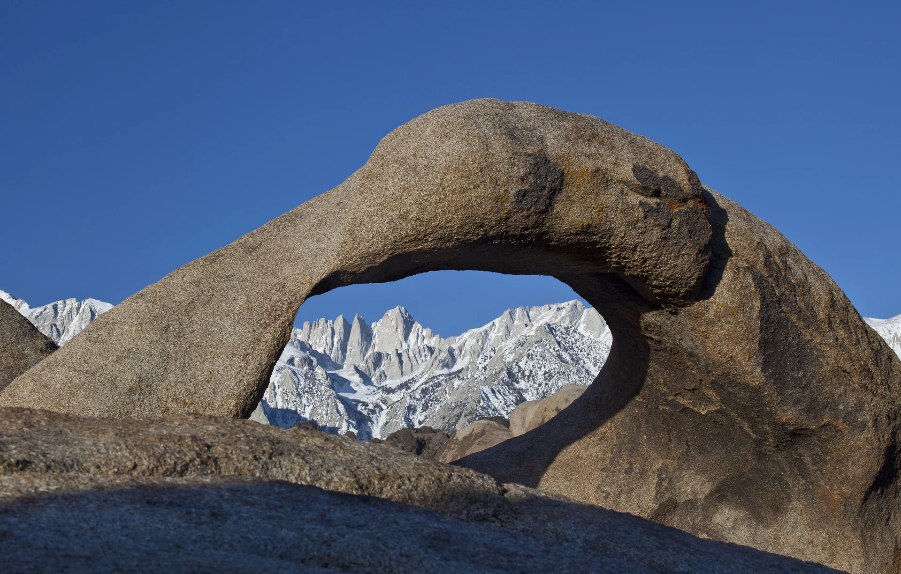
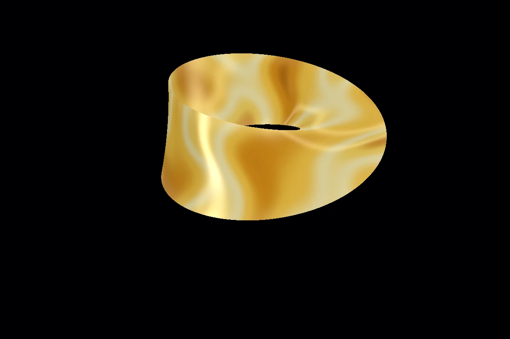
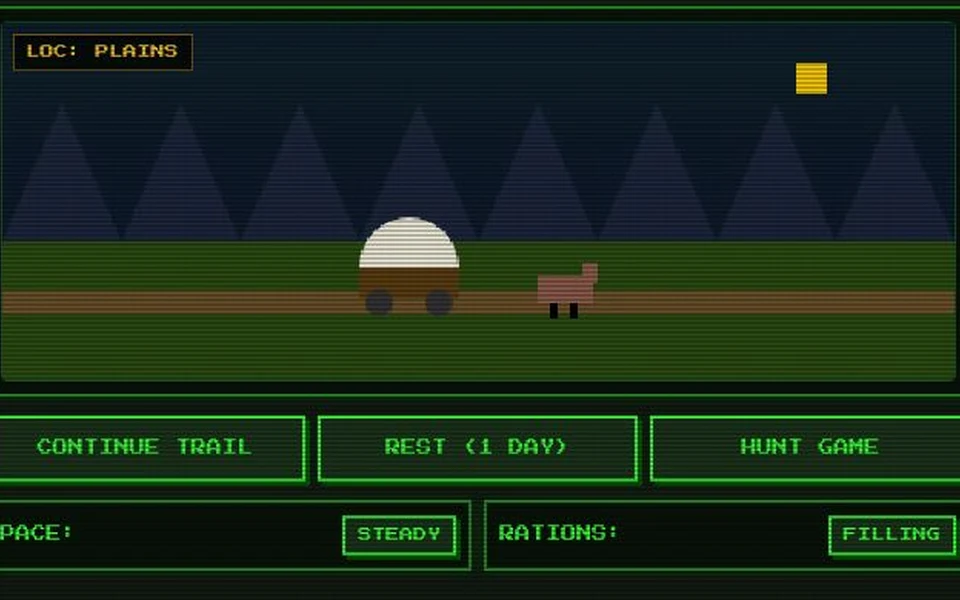
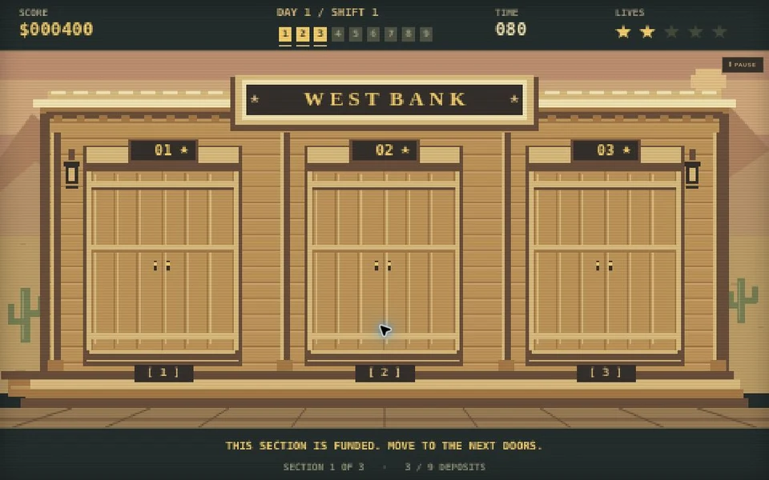

Plant proteins
Some naturally occurring cyclotides, including kalata B2, have a backbone twist that researchers describe conceptually as a molecular Möbius strip. A molecular analogy, rather than a tiny sheet of paper. [1]

A FIELD TRIP WITH A TWIST
One curious loop. Two unlikely worlds.
A little maths, a little gold fever, and
absolutely no sensible reason to stop exploring.
THE LONG WAY ROUND A ribbon → a rock → a rush
Play with liquid gold ↗Take the trail ↗Guard the bank ↗01 / THE SMALLEST POSSIBLE MATHS LESSON
Take a strip of paper. Give one end half a twist. Join the ends. You’ve made a Möbius strip.
Draw a line along its surface without lifting your pen: you can reach what looked like both “sides”. Follow its edge and you’ll find there is only one continuous boundary, too.
That’s the trick. Locally, everything seems ordinary. Go all the way round and your idea of “the other side” gets rather muddled.
Turn the idea over in 3D ↗Imagine a rectangle with coordinates u along it and v across it. Glue the ends with the crosswise coordinate reversed: (0, v) ≡ (2π, −v) That reversal makes the surface non-orientable: a little arrow carried once around the centre comes back flipped.
A physical paper model has thickness. “One side” describes the ideal surface we’re modelling.
One continuous journey. No jumping between edges.
02 / OUTSIDE THE PAPER SHOP
Sometimes. But “Möbius in nature” is a slippery phrase. A molecular twist, an engineered ribbon and a rock that looks loopy are different things.
Here’s a small field guide to the real examples—and the fine print.
Some naturally occurring cyclotides, including kalata B2, have a backbone twist that researchers describe conceptually as a molecular Möbius strip. A molecular analogy, rather than a tiny sheet of paper. [1]
Researchers have grown niobium triselenide crystals into genuine Möbius-shaped ribbons. Rigid crystals, doing something delightfully un-crystal-like. [2]
The orientation of polarization ellipses around a loop in a specially prepared light field can trace a Möbius strip. The topology is in the field’s pattern, not a solid ribbon of light. [3]
Chemists have synthesized aromatic hydrocarbons with Möbius topology in their conjugated systems. The shape changes the electronic story, too. [4]
Designed DNA strands can assemble into nanoscale Möbius ribbons. A lovely example of engineering with biological material—not evidence that ordinary DNA loops are Möbius strips. [5]
THE USEFUL DISTINCTION Nature supplies the ingredients. Sometimes scientists supply the twist.
03 / A VERY CONVENIENT COINCIDENCE
Meet Möbius Arch. It has the name. It has the curves. It does not have just one side.
This natural rock arch sits in the Alabama Hills near Lone Pine, on the eastern side of California’s Sierra Nevada. Its opening can frame Mount Whitney, the highest summit in the contiguous United States. [6]
It’s a visual resemblance, not a mathematical Möbius surface. Still, a loop of warm rock framing a spectacular mountain range is an excellent excuse to follow our curiosity west.
The famous Gold Rush began farther northwest, in the western Sierra foothills near Coloma. Same mountain range; a different chapter. [7]
04 / FROM GOLDEN ROCK TO GOLD FEVER
On 24 January 1848, James W. Marshall found gold at Sutter’s Mill, beside the South Fork of the American River.
By 1849, fortune-seekers were arriving from around the world. Some crossed the continent by wagon; others came by sea. The “Forty-Niners” gave the rush its enduring nickname. [7]
In our version, you get a wagon, a party and a worrying supply of optimism. The trail is a game: the route is compressed, the hazards exaggerated, and the history is here in the field notes.
Try your luck on the trail ↗Marshall’s discovery at Coloma sets the story in motion. Keeping the news quiet does not go especially well.
Gold seekers pour into California. On the overland trail, water, food, livestock and disease become much less abstract concerns.
California enters the United States on 9 September, amid the extraordinary upheaval of the rush. [8]
California was already home to Indigenous peoples. The rush brought dispossession, violence, disease and ecological damage. The arcade jokes belong to the games; those human costs belong to the history. [9]
05 / ENOUGH READING. FOLLOW YOUR CURIOSITY.
Two games. One shiny mathematical distraction.
No accounts, no coins, no rush.

INTERACTIVE 3D↗Drag, rotate and zoom a one-sided ribbon while liquid-gold currents flow over its surface.
Open the viewer →
TRAIL SURVIVAL GAME↗Lead your party west in 1849. Buy supplies, hunt, survive bad luck and reach the goldfields.
Start your expedition →
QUICK-DRAW ARCADE↗Three doors, a steady hand and a very short decision. Protect the gold. Spare the customers. Beat the public leaderboard on your chosen difficulty.
Pin on the badge →A small, deliberately improbable collection. The games are playful fiction; the viewer is an idealized surface. Neither is a substitute for a history book—or a map.
Arch photograph: Bob Wick, Bureau of Land Management, via Wikimedia Commons. A U.S. federal-government image, also distributed under CC BY 2.0. Resized and converted to WebP; cropped and shaded in the page layout.
West Bank: Frontier Edition is an independent reinterpretation of Dinamic Software’s original game, with new code, artwork and audio. It is not an official port. The Gold Rush Trail is a comic survival game; its illnesses, remedies and route should not be used as medical or travel guidance.
The viewer uses Three.js (MIT). The trail’s pixel typeface is Press Start 2P, by CodeMan38, under the SIL Open Font License. Fonts, scripts and images are served with this site.
No analytics or account system. Game scores and sound preferences may be saved in your browser. West Bank also keeps a random player key and optional nickname here. Ranked runs request a server-issued game ticket; if you choose to post, the server checks your replay and stores your nickname, verified best score, difficulty, progress and date for the public leaderboard. Replays are checked in memory, not saved. The web host and Cloudflare may process ordinary requests.